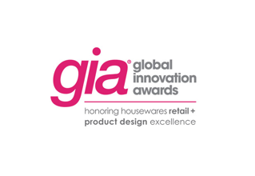
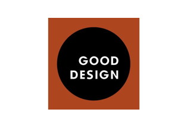
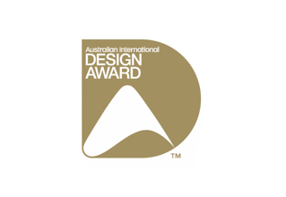
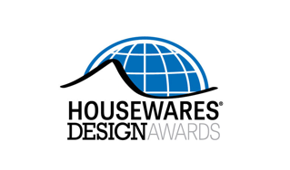

Corelle Brands
코렐 브랜드를 소개합니다
건강한 주방문화를 이끄는 코렐 브랜드
요리하고 소중한 이들과 테이블 위에서 음식을 나누며 기쁨을 주는 시간에 가치를 두고,
언제나 미래를 생각하며 소비자들에게 사랑받는 다양한 주방용품을 만들어 내고 디자인합니다.
함께 요리를 나누고 준비하는 이들의 동반자로써,
우리 브랜드가 지녀온 장인 정신과 혁신성을 잃지 않고 지속적으로 발전시켜 나갈 것입니다.
글로벌 주방용품 리더
코렐 브랜드는 대표 브랜드인 코렐, 파이렉스 브랜드들을 바탕으로 통합된 포트폴리오를 제시하며
글로벌 주방용품을 선도해온 기업입니다.
코렐, 파이렉스, 스냅웨어, 시카고 커틀러리, 코닝웨어등 대표적인 주방용품 브랜드들을 제고 및 판매
해왔으며 각 브랜드 보두 키친웨어 산업에서 신뢰받는 브랜드로 오랜 역사를 자랑하며 전 세계 수백
만 가정에서 사용되고 있습니다.
History of Innovation
1915년부터 100년 넘게 이어져 온 코렐 브랜드의 혁신적인 발걸음을 만나보세요.
현재-2000
- 2018코렐 브랜드 사명변경
- 2010스넵웨어(Snapware) 인수
- 2000글로벌 월드키친 출범
- 2013코렐 스냅웨어 출시
코렐 프리미엄라인 부티크 출시
코렐 파스타볼 출시 - 2012시카고 커틀러리 출시
코렐 한국형 코리안웨어 출시 - 2011스넵웨어 출시
- 2006코렐 사각라인 노블스퀘어 출시
- 2000한국 월드치킨 법인전환
2000-1990
- 1999100년 역사의 주방용품 제조회사
에코그룹(Ekco Group),
GHC(General House Corp.)
합병 - 1997소비재 용품 회사인
CCPC(Corning Consumer
Product Company)로 분사
- 1997코닝 CCPC로 분사
- 1990코렐 백화점 본격 진출
1970이전
- 1970코렐(Corelle®)출시
- 1958코닝웨어(CorningWare®)출시
- 1915파이렉스(PYREX) 출시
- 1851코닝(Corning Inc.) 창립
- 1974한국 내 조인트벤처 삼성 코닝 설립
World Branch
현재 미국 일리노이 주 로즈먼트에 본사를 두고 있으며
전세계 20개 지사와 3,000명이 넘는 직원들로 이루어져 있으며
오랜 역사를 바탕으로 전세계 주방용품 시장을 리드하고 있습니다
Award Winning Products
코렐 브랜드는 주방용품을 향한 열정으로 그 동안 수많은 역사와 만들어 왔으며
지금도 새로운 역사를 만들어 내고 있습니다.
-

PRIME (Chicago Cutlery), 2016
Pyrex, 2016
Snapware, 2015
CorningWare, 2015
Snapware, 2013
Pyrex, 2013
Chicago Cutlery, 2013
Pyrex, 2012
Chicago Cutlery, 2012 -

PRIME (Chicago Cutlery), 2016
Market Street New York (Corelle), 2016
Pyrex, 2016 -

PRIME (Chicago Cutlery), 2016
Pyrex, 2016
Snapware, 2015
CorningWare, 2015
CorningWare, 2014
Chicago Cutlery, 2013
Pyrex, 2012
Chicago Cutlery, 2012 -

Snapware, 2013
-

Pyrex, 2012
-

Chicago Cutlery, 2012
-

Snapware, 2013